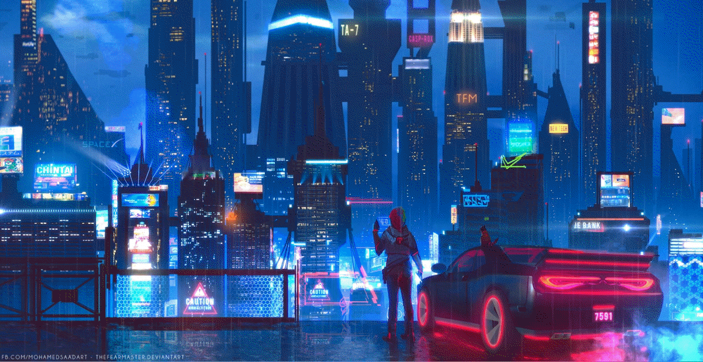

Building intelligent systems with a focus on AI.
Check out my blog!
I'm a data science graduate with expertise in AI and software engineering. I graduated from Maastricht University in Data Science and AI. I have extensive research experience in building recommendation systems and medical computer vision systems. I currently work as a Machine Learning Engineer at Media Info Grup Indonesia, where I build AI systems for various applications, particularly for media analysis.
Media Info Grup Indonesia
Maastricht University Medical Centre+
Maastricht University
Phone: +62 813 1084 478
Email: rafali.azzam2245@gmail.com
LinkedIn: linkedin.com/in/rafali-arfan-427bb9248
GitHub: github.com/rafaliazz